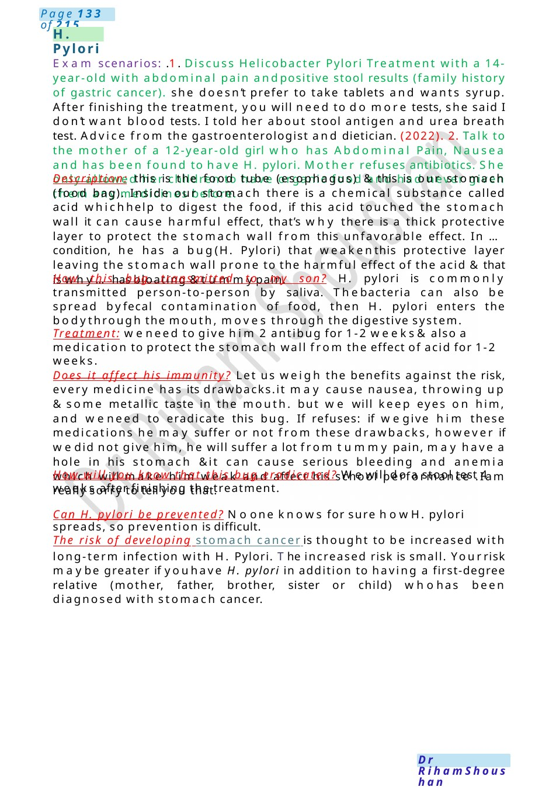

H. Pylori
Exam scenarios: .1. Discuss Helicobacter Pylori Treatment with a 14-year-old with abdominal pain andpositive stool results (family history of gastric cancer). she doesn’t prefer to take tablets and wants syrup. After finishing the treatment, you will need to do more tests, she said I don’t want blood tests. I told her about stool antigen and urea breath test. Advice from the gastroenterologist and dietician. (2022). 2. Talk to the mother of a 12-year-old girl who has Abdominal Pain, Nausea and has been found to have H. pylori. Mother refuses antibiotics. She only allowed her children to have organic food and had…
Scenario Summary
Exam scenarios: .1. Discuss Helicobacter Pylori Treatment with a 14-year-old with abdominal pain andpositive stool results (family history of gastric cancer). she doesn’t prefer to take tablets and wants syrup. After finishing the treatment, you will need to do more tests, she said I don’t want blood tests. I told her about stool antigen and urea breath test. Advice from the gastroenterologist and dietician. (2022). 2. Talk to the mother of a 12-year-old girl who has Abdominal Pain, Nausea and has been found to have H. pylori. Mother refuses antibiotics. She only allowed her children to have organic food and had…
Full Original Scenario

H. Pylori
Exam scenarios: .1. Discuss Helicobacter Pylori Treatment with a 14-year-old with abdominal pain andpositive stool results (family history of gastric cancer). she doesn’t prefer to take tablets and wants syrup. After finishing the treatment, you will need to do more tests, she said I don’t want blood tests. I told her about stool antigen and urea breath test. Advice from the gastroenterologist and dietician. (2022). 2. Talk to the mother of a 12-year-old girl who has Abdominal Pain, Nausea and has been found to have H. pylori. Mother refuses antibiotics. She only allowed her children to have organic food and had never given them any medicines before.
Description: this is the food tube (esophagus) &this is our stomach (food bag). Inside our stomach there is a chemical substance called acid whichhelp to digest the food, if this acid touched the stomach wall it can cause harmful effect, that’s why there is a thick protective layer to protect the stomach wall from this unfavorable effect. In ...condition, he has a bug(H. Pylori) that weakenthis protective layer leaving the stomach wall prone to the harmful effect of the acid &that is why...has bloating &tummypain.
How this bug transmitted to my son? H. pylori is commonly transmitted person-to-person by saliva. Thebacteria can also be spread byfecal contamination of food, then H. pylori enters the bodythrough the mouth, moves through the digestive system.
Treatment: weneed to give him 2 antibug for 1-2 weeks& also a medication to protect the stomach wall from the effect of acid for 1-2 weeks.
Does it affect his immunity? Let us weigh the benefits against the risk, every medicine has its drawbacks.it may cause nausea, throwing up &some metallic taste in the mouth. but we will keep eyes on him, and weneed to eradicate this bug. If refuses: if wegive him these medications he may suffer or not from these drawbacks, however if wedid not give him, he will suffer a lot from tummy pain, may have a hole in his stomach &it can cause serious bleeding and anemia which will make him weak and affect his school performance .I am really sorry to tell you that.
How will you know that this bug eradicated? Wewill do a stool test 4 weeks after finishing the treatment.
Can H. pylori be prevented? Noone knows for sure howH. pylori spreads, so prevention is difficult.
The risk of developing stomach cancer is thought to be increased with long-term infection with H. Pylori. The increased risk is small. Yourrisk maybe greater if youhave H. pylori in addition to having a first-degree relative (mother, father, brother, sister or child) whohas been diagnosed with stomach cancer.

Splenectomy Consent
Explanation: he is having hereditary spherocytosis, and he is having increased blood transfusion requirements, I wish there is a solution for that. that is why am asked to talk with you about a procedure called splenectomy
it is a procedure done under effect of sleeping medicine and done either by open surgery or keyhole surgery to remove an organ located here (pointing to your spleen site), this organ called spleen.
We are doing this procedure: hereditary spherocytosis is all about abnormal shaped RBCs and the spleen is the organ that destruct and kills that abnormal cells, so by removing the spleen we will decrease the destruction, and wewill decrease the blood transfusion requirements.
Drawbacks: any procedure there are benefits and risks, first of all there is a risk of sleeping medicine but it is given by an expert specialized doctor in giving sleeping medicine to the children, also there is a risk of catching infections, but no need to worry as it is done under complete cleaning measures, and there is a risk of bleeding but it is done by expert hands , definitely there will be some pain but pain killer will be given to him through the procedure and afterward.
Splenectomy:Advice Also spleen has another job in our bodythat it has a defensive role against germs and bugs that enter our bodies , but wewill overcome this problem by giving him somecertain shots, also it is better to avoid infections, he will take antibiotics for life and he have to wear a bracelet.
When will he take these shots? Within two weeks before the surgery
How long he will stay in hospital? the best one whocan tell you is the surgeon. but wewill monitor his vitals and once he is stable, taking all his food by mouth, he can go home.
How long he will stay in home? It is better to stay in homefor one month and to avoid contact sports for three months after the procedure
IF asking to take time to think we are waiting for your response as soon as possible.